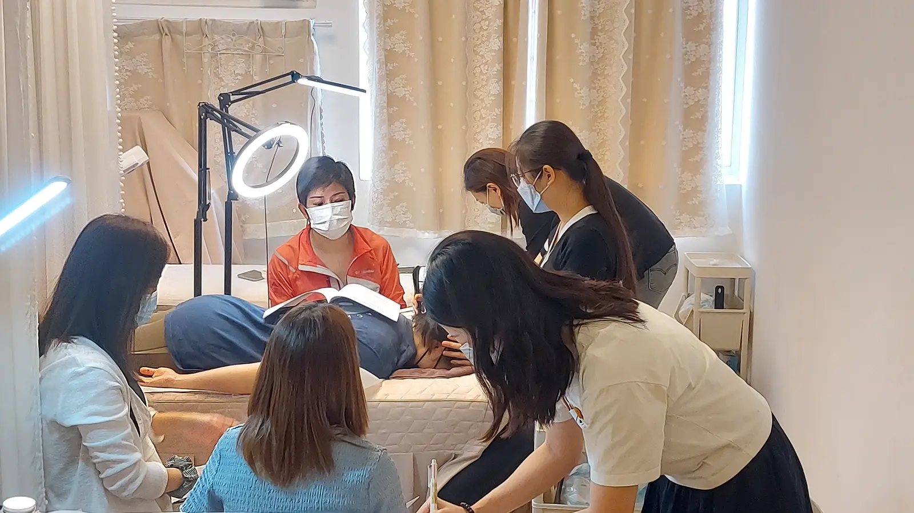

The Bojin Journal · Myths & real talk
Starting in Your 40s vs. Your 60s: Does the Method Differ?

I once taught a class with a 46-year-old and her mother, 71, sitting side by side, both brand new to bojin, both asking me some version of the same nervous question: is this going to work differently for me because of my age? I gave them the same answer, because it happens to be true for both of them. The technique doesn't know how old you are. Your skin does, a little, and that's worth talking about honestly.
So here's the idea before the detail: the method itself, order, angle, position, pressure, is exactly the same whether you're 45 or 65. What changes with age isn't the technique. It's how your skin responds to it, and how many years you have ahead of you to build the habit. Neither of those is a reason to start later, or to wonder if you started too late.
What stays exactly the same
Every principle I teach applies identically at any age. The broad edge still covers and calms; the rounded tip still reaches a single point. The working angle still meets tension rather than skimming past it. The order, warm, work, drain, still matters the same way. None of this shifts for a 45-year-old versus a 65-year-old student. If you've read anything else on this site about technique, it applies to you exactly as written, regardless of your age.
What actually changes: your skin's baseline
Skin thins and loses some of its elasticity over the decades, a normal, gradual process that has nothing to do with tension or technique. Thinner, less elastic skin bruises and marks a little more easily than it did twenty years earlier, which means the same pressure that felt perfectly comfortable at 45 might sit slightly heavier on skin at 65. This isn't a different rule; it's the same "enough to reach the tension, never enough to hurt" standard, just landing at a slightly lighter number as skin changes with time.
Age doesn't change the method. It changes where your comfortable pressure sits. A 65-year-old student isn't using a modified technique; she's using the exact same technique, calibrated to what her own skin tells her that day, the same way a 45-year-old calibrates to hers. Everyone's comfortable pressure is personal, at every age.
The real difference: how much runway you have
Starting at 45 means you'll likely have twenty more years of practiced habit by the time you're 65, and that practice does make the technique feel more automatic, the angle and pressure becoming instinct rather than something you think through. That's a genuine advantage of starting earlier. But it's an advantage in ease and habit, not in whether the method itself works. A first session at 65 still eases whatever tension is there that day, exactly as a first session at 45 does.
Is it too late to start later?
No, and I want to be direct about this because I hear the worry often. Bojin doesn't reach back through decades of change; it eases the tension your face is holding right now, today, whenever today happens to be. That's true whether you begin at 40 or 70. The years you didn't spend practicing aren't a loss you need to make up for. They're simply years the method wasn't available to you yet. It's available now.
An honest note
Your age won't determine whether the method works; it will determine what comfortable pressure feels like on your particular skin, and how quickly the technique becomes second nature. Both of those are worth knowing honestly rather than guessing at. The gentle, temporary effect and the need for consistency stay the same at every age you might pick up a bojin stick for the first time.
Whether you're 45 or 75 reading this for the first time, the same page applies to you. Pick up the tool whenever you're ready. There's no age this stops being worth learning.
Quick answers
Is bojin different for a 45-year-old than a 65-year-old?
The technique itself, the order, angle, and pressure, is identical at any age. What differs is the pressure that feels comfortable on thinner, older skin, which usually means a slightly lighter touch, and how many years of consistent practice you have ahead of you to build on.
Is it too late to start bojin at 65 or older?
No. The gentle, temporary effect works the same way at any age you begin, easing the tension your face is currently holding. It won't undo decades of change, but neither would starting at 45, and the benefit of easing today's tension is available whenever you start.
Should an older student use lighter pressure than a younger one?
Often, yes, simply because thinner, less elastic skin bruises and marks more easily than it did decades earlier. The comfortable-pressure rule stays the same at every age; what changes is that comfortable pressure tends to sit a little lighter as skin thins with time.
Does starting younger mean better results later?
It means more years of practiced habit and skill by the time you reach 60, which does make the technique feel more automatic. It doesn't mean the method works better on younger skin; the same gentle, temporary tension relief is available to a first-time student at any age.
See the same technique, any age
The method looks the same whether the hands practicing it are 45 or 70. My free 3-minute video shows the technique that applies to you exactly as written, whatever your age.
Watch the free 3-min videoYu-Ting Lan is a Taiwan-based international bojin instructor and the founder of Héhé Studio. She has taught her bojin method to more than a thousand students, from complete beginners to grandmothers, across Taiwan, Hong Kong, and Malaysia.